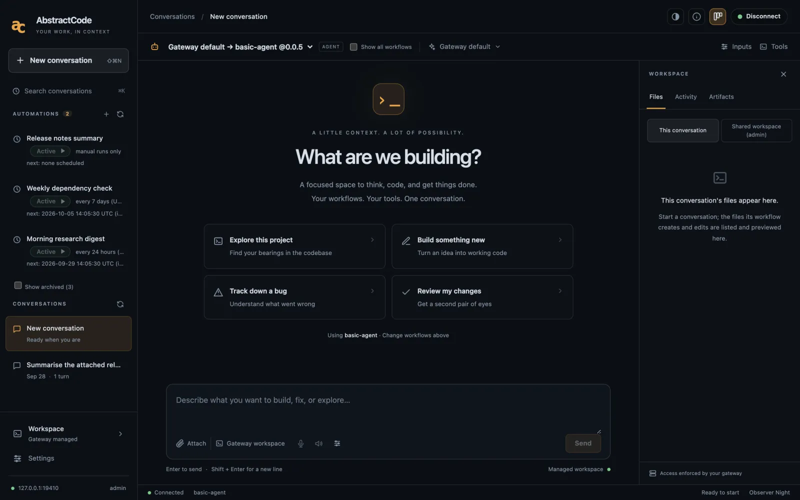
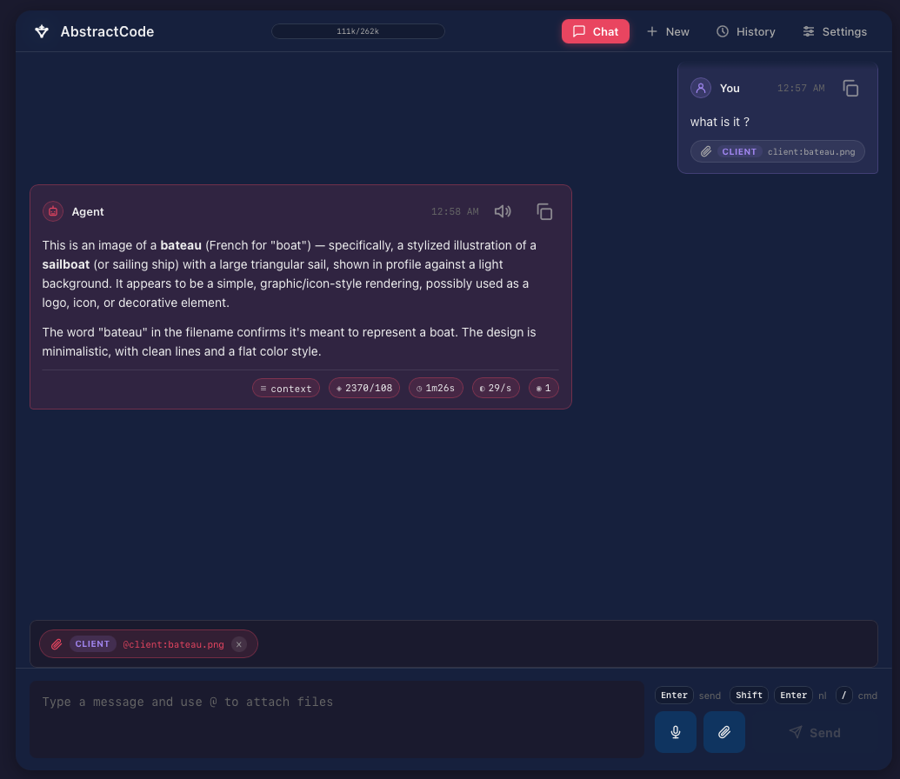
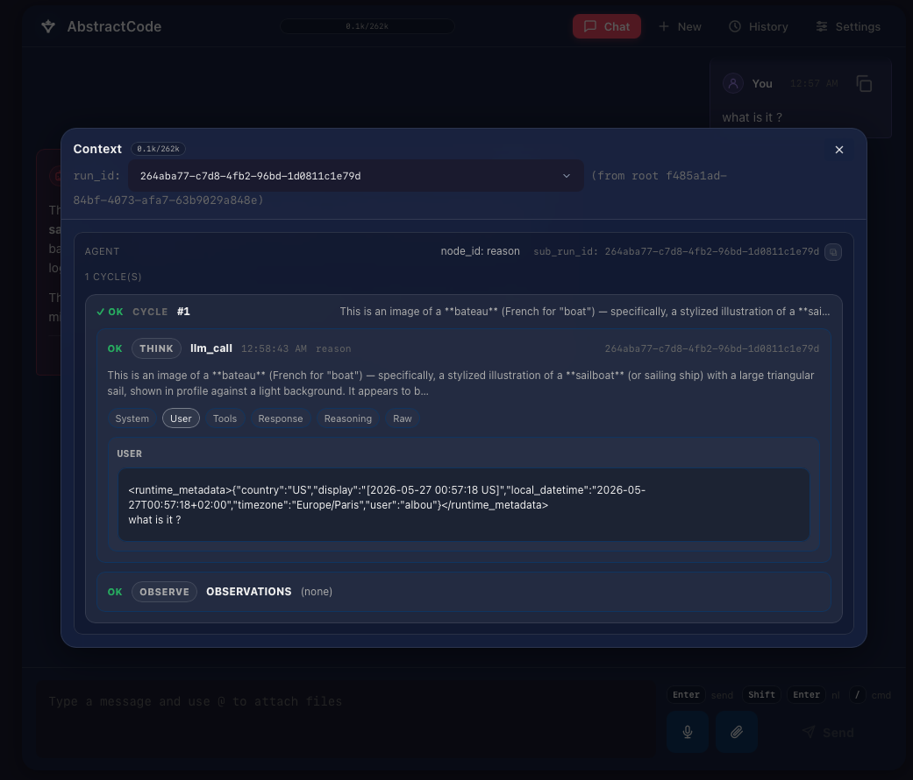
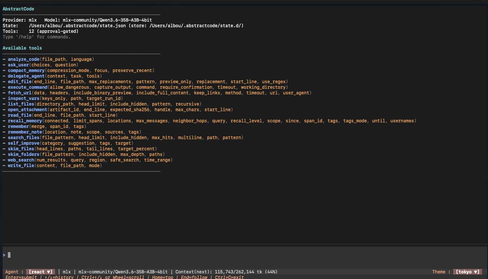

AbstractCode
An agentic coding assistant that runs durably on your AbstractGateway, with two clients you can use interchangeably: a terminal application written in Rust and a browser application. The agent works on the gateway, so you can start a task in the terminal, close your laptop, and pick the same session up in the browser. The installer puts the terminal client on your PATH, and the gateway console's Apps page installs and updates both; see Install.
# Terminal client: the installer puts it on your PATH
abstractcode login --token <admin token> # once
abstractcode
# or, on the gateway's computer, without handling a token:
abstractgateway apps tui-command code
# Web client (also on the console's Apps page)
npx @abstractframework/code \
--gateway-url http://127.0.0.1:8080One agent on the gateway, two clients
Both clients are thin. They start runs, stream the run ledger (the record of every step) live, show workflow and tool activity as it happens, answer tool approvals and agent questions, and steer a run while it is in flight. They talk to the gateway over HTTP and server-sent events (SSE) and send the same durable commands, so a run waiting for your approval in one client can be approved from the other.
Terminal client v0.7.1
A Rust application on the AbstractTUI engine: live reasoning cycles and tool cards, a multiline composer, approval modals, slash commands and 26 themes. The one-line installer builds it into ~/.local/bin, next to abstractgateway (--no-code-cli skips it), and the console’s Apps page installs and updates it in the same folder. Or install it with cargo install abstractcode (Rust 1.87+) or download a prebuilt binary from the GitHub releases. macOS and Linux are the verified platforms.
Web client v0.6.1
A browser application (TypeScript, React) published as @abstractframework/code. The gateway (0.7.0 or later) can install, start and serve it at /apps/code/ on its own address, or you can run it on its own with npx on 127.0.0.1:3002.
Runs live on the gateway
Runs, history, approvals and workspace files stay on AbstractGateway. Quit or close a client and the run keeps going; reopen it and prior turns replay from their ledgers, a live run reattaches and pending approvals come back.

What you can do
Everything below works in both clients unless it names one.
Durable runs
Pause, cancel, resume and reattach to a session that keeps running while the client is closed. In the terminal, /pause parks the run on the gateway and /resume continues it.
Approval-gated tools
Tools stop and wait for you by default; approve or deny from either client. In the terminal, /permissions read|write|all sets the auto-approval level and per-tool pins override it. all is never the default.
Steering
Type while the agent works: your guidance is folded into its next reasoning cycle without restarting the run.
Workflows
Run the gateway's default agent workflow, resolved by the gateway at every new turn, or pick a named agent bundle: /workflow or --workflow <bundle[:flow]|default> in the terminal, the workflow selector in the web toolbar.
Live activity and streamed replies
Reasoning cycles, tool cards that update in place, token counts and context metering, streamed from the run ledger. With a gateway that supports live replies, you can watch the answer as the model writes it (/stream, or Settings → Stream replies).
Workspace files
Browse and preview the files a run works on, with their absolute path on the gateway host: /files in the terminal, the Files tab in the browser.
Automations
Run a workflow on a schedule, then pause, run now, revise, archive, answer its approvals, browse its folder and discuss any run as a new conversation. The same automations appear in AbstractAssistant and AbstractObserver. About automations.
Review mode
Before a tool-call-free answer is accepted as final, a verifier re-reads the transcript and can ask for more work. It is on by default in the terminal (/review, --no-review).
Goals and entities (terminal)
/goal <text> starts a self-verifying run that cycles until its own checks pass or its budget runs out (it needs an abstractcode.goal.v1 workflow on the gateway). @name opens a visit with a summoned entity; /entities lists them.
The two clients



Connect a client to your gateway
You need a reachable AbstractGateway and a gateway user token. The one-line installer sets up a local gateway at http://127.0.0.1:8080 and already puts abstractcode on your PATH; the console's Apps page installs Code (the browser app and, where a ready-made download exists, the terminal app), opens it signed in, and offers Open in Terminal.
# already on PATH after the one-line install; otherwise:
cargo install abstractcode # or a prebuilt binary from GitHub releases
# sign in once (the installer's summary prints this line with your token)
abstractcode login --token <admin token>
# or, on the gateway's computer (SSH included), a one-time line valid 2 minutes:
abstractgateway apps tui-command code
# another gateway:
abstractcode login --gateway-url https://gateway.example.com --token <token>
abstractcode doctor # reachability, auth, catalog
abstractcode # launch the app
abstractcode --resume # reopen the last session
abstractcode --workflow default # the gateway's default agent workflow- Started without a valid sign-in,
abstractcodesays so and prints both ways to sign in instead of opening. The installer never saves the token for you; the admin token is in<data dir>/auth/bootstrap-admin-token. loginchecks the credentials against the gateway before saving them in~/.abstractcode/gateway.json. Without--gateway-urlor a saved login, the client uses the gateway installed on this computer (~/.abstractframework/gateway.json), elsehttp://127.0.0.1:8080.--providerand--modelonly override the gateway's route.
# From the gateway console: Apps > Code > Open (http://127.0.0.1:8080/apps/code/)
# Or on its own (Node.js 18+), on http://127.0.0.1:3002
npx @abstractframework/code --gateway-url http://127.0.0.1:8080
npx @abstractframework/code --port 3010 # another port; without --gateway-url it uses the local gateway- Sign in with your gateway user and token: the web server exchanges the token for a gateway browser session and keeps only app-scoped session cookies. The server listens on
127.0.0.1by default; to reach it from another machine, expose or tunnel the gateway's own address and use/apps/code/.
# One-shot run that prints transcript events as they arrive
abstractcode exec "Summarize the workspace layout" --permissions read
# Stream the reply to stdout while the model writes it
abstractcode exec "List the TODO comments in src/" --stream on- Exit codes: 0 completed answer, 1 failure, 2 usage or configuration error, 124 timeout, 130 cancelled. Without a raised
--permissionslevel, mutating tools are denied with an explanation the model sees, and agent questions get a "no interactive user" answer so unattended runs never stall.
Slash commands you will use first
Type a task and press Enter. /help lists every command; ? shows the keys.
| Command | What it does |
|---|---|
/workflow | Pick the agent: Gateway default first, then every published workflow implementing abstractcode.agent.v1. |
/model | Pick provider and model, then reasoning effort and multi-token prediction. |
/permissions read|write|all | Auto-approve proven read-only tools, then workspace file writes, then everything. Sticky per session. |
/files | Browse the run's workspace on the gateway host and preview text, Markdown, JSON or images. |
/goal <text> | Start a self-verifying goal loop; /goal shows status, /goal stop cancels it. |
@name, /entities | Talk with a summoned entity hosted by the gateway; Alt+E cycles focus between the agent and open visits. |
/automations | List the gateway's automations and open one: its runs, waits, folder and controls. |
/schedule [task] | Create an automation that runs the current workflow, in four steps: task, when, context, tools. |
/queue <text>, /sessions, /export | Queue the next task, reopen a recent session, write the conversation to Markdown or JSONL. |
Keys in an open automation
| Key | Action |
|---|---|
p | Pause or resume |
g | Run now: "Run it once now, without waiting for the schedule; the next scheduled run keeps its time." Works while paused and does not count toward a run limit |
x | Stop the current run |
e | Revise title, interval and context |
a, then a | Archive (stops it and hides it; history stays readable) |
d | Discuss a run as a new conversation |
w | Browse the automation's folder |
y / n | Approve or deny a waiting tool call |
h | Show archived automations (in the list) |
Code in the browser
Workflow selector
Choose Gateway default (the agent workflow your gateway's admin set as default), a published coding agent or, with Show all workflows, any registered workflow. Agent tasks use the composer; structured workflows use Inputs.
Automations sidebar
The Automations section lists state, what runs now, the next run and attention. + creates one with the toolbar's workflow; each automation has its own page with its controls, its runs and its Automation folder. Discuss opens a run as a conversation.
Files, replies, About
The Files tab shows the conversation's workspace on the gateway with previews, Settings → Stream replies shows replies as they are written, and About lists the app's and the gateway's versions. Questions and approvals appear in the conversation.